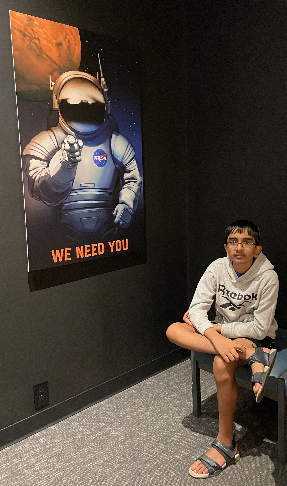

Flowers for Algernon is a science fiction novel written by Daniel Keyes. This book dives into topics such as intelligence and humanity, and whether being smart is the same thing as being happy. It is deeply emotional and philosophical. The main character is a 32-year-old man named Charlie Gordon who has an intellectual disability, and his IQ is around 60. Despite this, he tries his best to be kind. The book is written in journal entry format, as progress reports written by Charlie himself. He has been taking classes at a disabled adult learning center to “become smarter”. His uncle has got him a job at a bakery where he cleans. He is frequently made fun of because of his disability, specifically by his coworkers at the bakery. To become smart, he undergoes an experimental procedure to increase his intelligence. This procedure has already been tested on a mouse named Algernon. After Charlie’s operation, although progress is initially slow, he begins to gain intelligence at a very fast rate, becoming smarter than most humans around him. He then realizes that people who he thought were his friends were mocking him and making fun of him for his disability, playing on the fact that he was unable to understand their true intentions. He then develops feelings for the person who taught him at the learning center, Alice Kinnian. But, as Charlie becomes smarter, he realizes that his emotional growth is not nearly as fast as his intelligence is growing, making emotions a major obstacle in his path. While Charlie is experiencing his new intelligent life, Algernon slowly loses his intelligence, regresses, and then dies. Charlie realizes that a similar effect could happen to him, and he calls it the Algernon-Gordon effect. Eventually, Charlie’s abilities and intelligence begin to regress like Algernon’s, and he eventually becomes who he was before, unable to read and write well, and understand people as well as he did previously. However, Charlie is now aware of what he has lost and does not understand why he became “dumb” again. The novel concludes with Charlie planning to leave New York and asking his teacher and former love, Alice Kinnian, to “leave some flowers on Algernon’s grave”.
This book emphasizes that we are all human, no matter where we come from or who we are. By reading, you will gain a new perspective on humanity, on how we should treat people, and the true potential we all have. This was a great book to read and had a very engaging plot and characters, in which each character contributed something.
Agneya Dutta Pooleery is a ninth-grade student at Williamsville East High School, New York. He loves to read, play the guitar and violin, and solve cryptography puzzles.